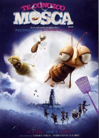

.png)
El zorro y el sabueso

| Estreno | 10 de julio de 1981 |
| Duración | 83 minutos |
| Actores de voz | Mickey Rooney, Kurt Russell, Pearl Bailey, Jack Albertson, Jeanette Nolan, Sandy Duncan, Paul Winchell, Pat Buttram, Keith Coogan, Corey Feldman, John Fiedler, John McIntire, Richard Bakalyan, Clarence Nash, Candy Candido, Jack Ange. |
| Producción | Ron Miller, Wolfgang Reitherman, Art Stevens |
Sinopsis:
“La aventura y la diversión de este clásico de Disney comienzan cuando una adorable viuda adopta un precioso cachorro de zorro llamado Tod. El travieso zorro pronto se encuentra con Toby, un adorable cachorro de perro de caza. Así se hacen los dos inseparables amigos… sin saber que por su naturaleza deberían ser enemigos. Bajo la mirada vigilante de Mamá Búho, Tod y Toby juegan y se divierten en el bosque, inconscientes de que en el futuro tendrán que enfrentarse y poner su amistad a prueba.”
Información obtenida de:diariodefriki
Te conozco mosca
| Estreno | 16 de enero de 2009 |
| Duración | 76 minutos |
| Actores de voz | Abraham Vega, Ricardo Tejedo, Manuel Cuevas "La Garra", Virginie Efira, Humberto Vélez, Tamara Vargas, Miguel Ángel Ghigliazza. |
| Producción | Robert Boner |
Sinopsis:
En Bzz & Co., fabricante de cintas matamoscas, el negocio no prospera: no hay moscas suficientes. Pero cuando los accionistas preocupados por la situación deciden racionalizar, surge un extravagante inventor con un proyecto de moscas mutantes que pronto empiezan a atacar a los habitantes de la ciudad. Max, un joven en busca de su padre, descubre el juego de Bzz & Co. y decide arruinarles el plan con ayuda de Félicie, su novia.
Información obtenida de: elsiglodetorreon
¡Mamá! soy un pez

| Estreno | 11 de mayo de 2002 (México) |
| Duración | 80 minutos |
| Actores de voz | Nis Bank-Mikkelsen, Søren Sætter-Lassen, Morten Kerrn Nielsen, Sebastian Jessen, Pil Neja, Louise Fribo,Ulf Pilgaard, Dick Kaysø, Paprika Steen, Ghita Nørby, Zlatko Buric, Martin Brygmann,Peter Gantzler, David Bateson, Garry Chalk, Ian James Corlett, Michael Dobson, Morgan Fane, Alexandra Jakobsen, Terry Jones, Alessandro Juliani, Scott McNeil, Richard Newman, Pauline Newstone, Jeff Pace, Aaron Paul,John Payne, Alan Rickman Teryl Rothery, Tabitha St. Germain, Michelle Westerson |
| Producción | Russell Boland, Eberhard Junkersdorf, Anders Mastrup |
Sinopsis:
La historia empieza cuando los padres de Fly y Stella salen a cenar y dejan a Fly, su dulce hermana Stella y el inteligente Chuck a cargo de su tía Ana. Aprovechando que su tía se queda dormida, los tres niños salen a pescar y descubren la casa de la playa del Profesor Mac Krell, un excéntrico biólogo marino que ha inventado una poción que puede convertir las personas en peces y su correspondiente antídoto. La situación se complica cuando Stella bebe esta poción y se transforma en una estrella de mar que es tirada desde la ventana al mar por Fly. Con el fin de encontrarla, Fly y Chuck beben también de la poción del Profesor convirtiéndose respectivamente en un pez californiano y una medusa.
Por desgracia, el antídoto de la poción ha desaparecido también en el océano y, por accidente, varios peces se la han bebido. Así, Joe, un pez piloto, se ha devenido muy inteligente y ha construido su propio imperio bajo el agua. Sus principales seguidores son un gran tiburón blanco y un cangrejo. Fly, Stella y Chuck ayudados por un caballito de mar nombrado Sasha intentan conseguir lo que queda del antídoto que guarda Joe pero, acaban convirtiéndose en fugitivos de la ley. Al final, su única solución es buscar ellos mismos los ingredientes necesarios para crear su propio antídoto. Mientras tanto, en la casa de los niños, sus padres han vuelto de su salida y están buscando a sus hijos, ahora marinos, con la ayuda de Tía Ana y el Profesor.
Información obtenida de: EcuRed:Enciclopedia_cubana
La canción del mar

| Estreno | 6 de septiembre de 2014 |
| Duración | 93 minutos |
| Actores de voz | David Rawle,Brendan Gleeson, Lisa Hannigan, Fionnula Flanagan, Lucy O'Connell, Jon Kenny, Pat Shortt, Colm Ó'Snodaigh,Liam Hourican, Kevin Swierszcz, Will Collins, Paul Young. |
| Producción | Claus Toksvig Kjaer, Paul Young, Tomm Moore |
Sinopsis:
Ben y Saoirse viven en un faro, en la parte más alta de una pequeña isla, con su padre, que para protegerlos de los peligros del mar los envía a vivir con su abuela a la ciudad. Allí Ben descubre que su hermana pequeña es una Selkie, un hada del mar, una niña foca que con su canción puede liberar a los seres mágicos del sortilegio que les hizo la Bruja de los búhos.
En un viaje fantástico, Ben y Saoirse se enfrentarán a miedos y peligros, y lucharán contra la Bruja para ayudar a los Seres Mágicos a recuperar su poder.
información obtenida de:lahiguera
Número nueve

| Estreno | 9 de septiembre de 2009 |
| Duración | 79 minutos |
| Actores de voz | Christopher Plummer, Martin Landau, John C. Reilly, Crispin Glover, Jennifer Connelly, Fred Tatasciore, Elijah Wood, Alan Oppenheimer, Tom Kane, Helen Wilson. |
| Producción | Tim Burton, Timur Bekmambetov |
Sinopsis:
Aventura post-apocalíptica protagonizada por nueve muñecos de trapo que deberán enfrentarse a unas máquinas gigantes si quieren preservar el futuro de la civilización. La historia transcurre en un futuro muy próximo. El invento conocido como la Gran Máquina activa y aporta energía a las máquinas que se han alzado contra la raza humana, diezmando a la población, antes de empezar a apagarse. El mundo pronto quedará destruido, pero un grupo de pequeños seres intenta salvar lo poco que queda de la civilización. Está compuesto por nueve criaturas a las que un científico infundió vida poco antes de la catástrofe. Entre el grupo, Número 9 demuestra tener madera de líder y cualidades que quizá les ayuden a sobrevivir e incluso a prosperar. Los demás miembros del grupo son Número 1, un veterano de la guerra, de carácter dominante y líder del grupo hasta la fecha; Número 2 , un generoso y ahora frágil inventor; Número 3 y Número 4, gemelos de una gran erudición que se comunican sin palabras y sobre todo entre sí; Número 5, un inquebrantable ingeniero; Número 6, un artista errático atormentado por las visiones; Número 7, una valiente guerrera autosuficiente, y Número 8, el musculoso y no muy listo guardaespaldas de Número 1.
Con un grupo tan reducido, estas creaciones "stitchpunk" ("residuopunk", derivado de la corriente "steampunk") deben hacer acopio de una fuerza desproporcionada a su tamaño para engañar y luchar contra las máquinas que aún funcionan, una de las cuales es una bestia mecanizada. En las tinieblas que preceden al amanecer, Número 9 debe reagrupar y animar a los suyos para hacer frente común al peligro inminente…
Información obtenida de: filmaffinity